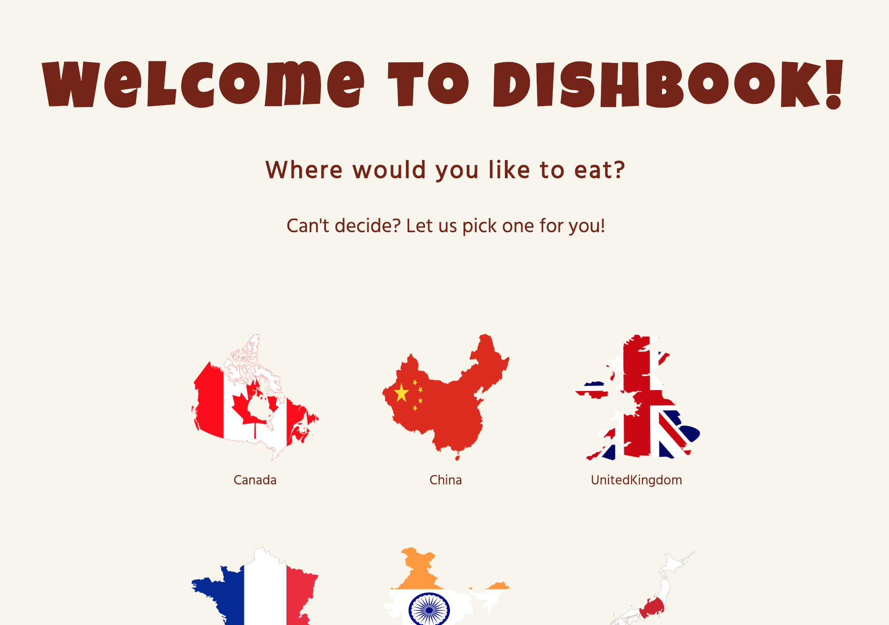
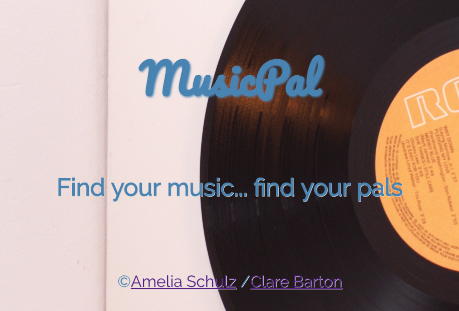

about me
I come from the public library world with a Master's Degree in Library and Information Science,
but I got
hooked on coding and I haven't looked back since. I enrolled in the DigitalCrafts
Fullstack Immersive Bootcamp in September of 2018 and will graduate in January of 2019. My past
experience
means that I bring a wealth of customer service (internal and external), research, teaching,
troubleshooting, and communication skills to a new position. But most of all, I am enthusiastic
about
writing efficient and elegant code, and every new language and method I learn just makes me
want to dig
deeper. I am a member of Women Who Code Atlanta and the cohost of one of the OTP subgroups. I enjoy
volunteering and recently had an amazing weekend building websites in WordPress at the 48in48 Super Service
Event in Atlanta, January 25-27, 2019. I also volunteer at the Fulton County Lifeline Animal Shelter, and
other personal interests include my family, reading, knitting, movies, walking, hiking,
and chocolate.
technologies I use:
Lender-Be
A fullstack group project for DigitalCrafts, Lender-Be is a site for lenders and borrowers to
connect and lend or borrow anything they might have around the house that someone would be willing
to lend or need to borrow. (With thanks to Shakespeare/Polonius for the name.)
We used HTML, CSS, JavaScript, PostgreSQL, Node.JS, and Express. Check it out on GitHub and the live site.

Dishbook
This was a group mini-React project for DigitalCrafts, built using HTML/CSS, JavaScript, React, and
React Router. Each page has a unique API call, moving between pages is done with React Router, and the
inner recipe page has an actual working recipe. It was a fun little project. Check out the GitHub
and the
live site.

MusicPal
This was my final, group project for DigitalCrafts, built using HTML/CSS, JavaScript, PostgreSQL,
Node.js, Express, React, and React Router. We used two different music APIs and built a database so
that users could look for events and musical artists and add them to their user profile, and then
connect with other users based on
their musical tastes. This project enabled us to really dig into React! Check out the GitHub, the YouTube video,
and the
live site.